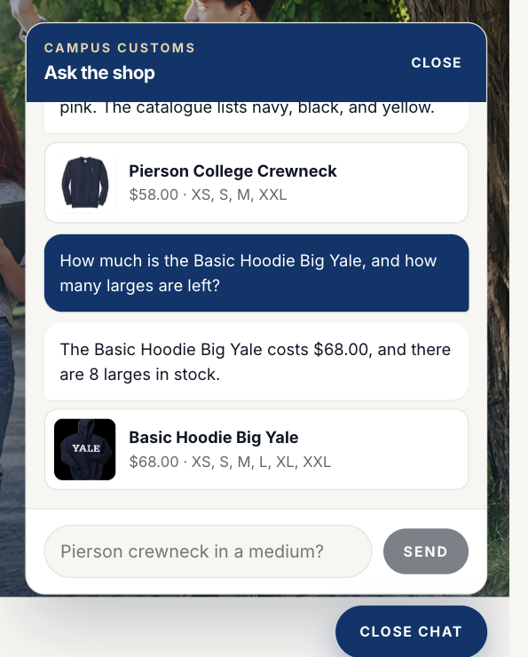
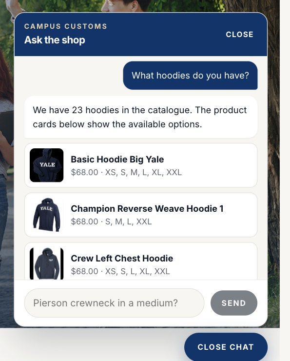
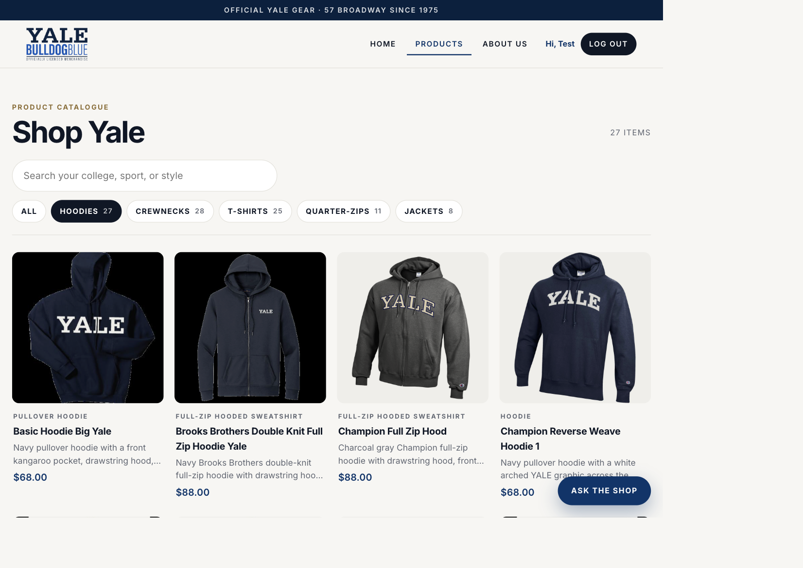

Asked how much the Basic Hoodie Big Yale costs and how many larges are left. The reply says $68.00 and 8 larges, which is the catalogue price and the size L quantity in the database. The card under the reply shows the same $68.00.

Asked "What hoodies do you have?" The chat answered with product cards: a photo, the database price, and the sizes still in stock. It reported 23 hoodies, which is every catalogue row whose garment type contains "hoodie." The panel shows the first three; 23 cards were returned in all.

Problem 9 added a search box and garment chips to the Products page, which used to be one long grid of 102 items. Clicking Hoodies sets the count to 27 items and the grid shows only hoodies. That chip is a wider group than the chat search: it also includes hooded sweatshirts.